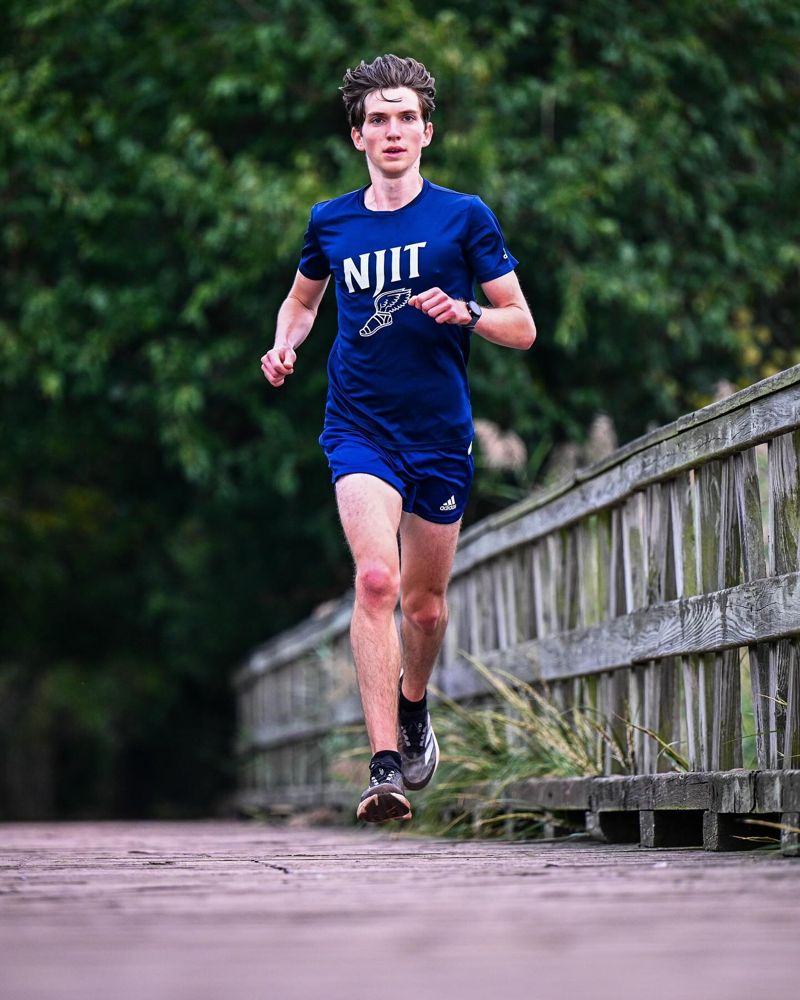
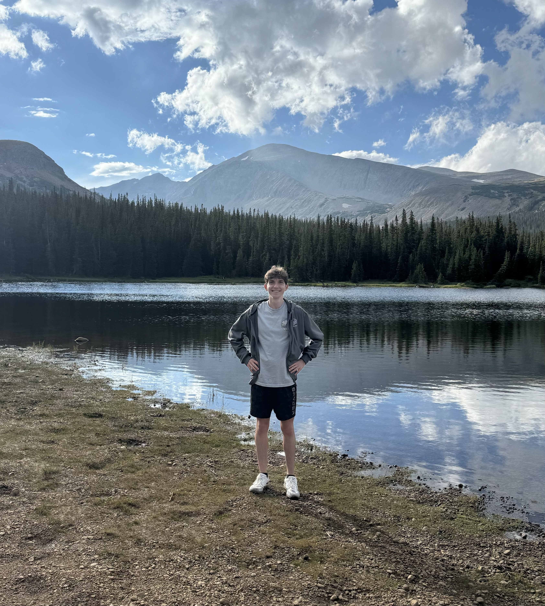

Coding

- Love for web development and have many personal projects built on my github. (github logo is also a link)
- Most recently built a training log app that tracks users running data and visualizes it with Recharts
- I used React, NextUI, and Tailwind to build the frontend, and Next.js, GraphQL, and Prisma with PostgreSQL for the backend.
- I used NextAuth.js for authentication and hosted on Vercel at: https://training-log-tawny.vercel.app/
Running

- Division 1 Cross Country/Track and Field athlete.
- Been running for 5 years and found a love for distance running.
- My main events are the mile, 5k, and 10k.
Traveling

- Love to visit new places and experience culture through views and cuisine.
- Spent this past summer road tripping in New Mexico, Arizona, and Colorado.
- Also have a big family presence in Slovakia, so I love to visit frequently.